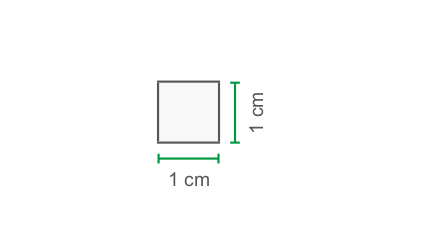
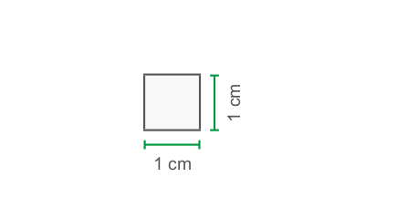

84
UNIDADE 3 - CAPÍTULO 2
CAPÍTULO 2 - Cálculo da área de figuras planas
Área do retângulo
Inaugurado em 16 de junho de 1950, o Maracanã já recebeu jogos da Copa do Mundo no mesmo ano e algumas partidas do Mundial em 2014, incluindo a grande final. Também sediou jogos da Copa das Confederações em 2013, cerimônias de abertura e encerramento dos Jogos Pan-Americanos em 2007 e, mais recentemente, dos Jogos Olímpicos em 2016 e Copa América em 2019. Além de competições esportivas, o Maracanã já foi palco de importantes eventos, como shows de Madonna, Rolling Stones, Paul McCartney, Tina Turner, Foo Fighters, Coldplay e missas campais do então Papa João Paulo II, em 1980 e 1997.
Veja as suas dimensões:
Semifinal do torneio de futebol masculino nos Jogos Olímpicos. Estádio do Maracanã, Rio de Janeiro, RJ, 2016.

1. Troque ideias com um colega e expliquem de que maneira é possível calcular a área do campo de futebol do Maracanã. Em seguida, calculem sua área.
Veja um retângulo formado por quadrados de 1 cm² de área.
 

85
UNIDADE 3 - CAPÍTULO 2
Observe que sua base mede 4 cm e sua altura 2 cm. Portanto, a área desse retângulo é igual a 8 cm².
Para calcular a área de um retângulo, podemos multiplicar a medida da base pela medida da altura.
A área de um retângulo é dada por:
A=b.h
Em que:
► b é a medida da base do retângulo;
► h é a medida da altura do retângulo.

Área do quadrado
Marcela está reformando a sua churrasqueira e escolheu o azulejo representado na imagem ao lado, compondo um mosaico. Observe as quatro cerâmicas que fazem essa composição, sendo que cada uma delas mede 20 cm x 20 cm.
1. Troque ideias com um colega e expliquem como Marcela poderá calcular a área ocupada pela figura composta por essas quatro cerâmicas. Em seguida, calculem essa área em metros quadrados.
Observe agora um quadrado formado por 4 quadrados de 1 cm².

A base do quadrado mede 2 cm e a altura 2 cm. Logo, sua área é igual a 4 cm².
No quadrado, as medidas dos lados são iguais, ou seja, a medida da base é igual à medida da altura.
A área de um quadrado é dada por:
A = \(\ell^{2}\)
Em que:
► \(\ell\) é a medida do lado do quadrado.

86
UNIDADE 3 - CAPÍTULO 2
Área do paralelogramo

Com base na área de um retângulo, vamos verificar como se calcula a área de um paralelogramo conhecendo as medidas da base e da altura.
2. Com um colega, sigam os passos a seguir:
1.° Peguem uma folha de papel e desenhem, cada um, um retângulo com 6 cm de comprimento por 3 cm de largura.
Calculem a área desse retângulo e registrem no caderno.

2.° Marquem um segmento na base do retângulo medindo 4 cm e a extremidade desse segmento com o vértice superior do retângulo, conforme mostra a figura.

3.° Com o auxílio de uma tesoura, recortem o triângulo que você formou.
87
UNIDADE 3 - CAPÍTULO 2
4.° Encaixem a parte recortada no lado oposto do retângulo e colem, no caderno, a figura formada.

a) Qual é a figura geométrica formada?
b) Qual é a área dessa figura?
c) O retângulo inicial e o paralelogramo têm a mesma área?
d) Como podemos calcular a área de um paralelogramo?
![Ilustração com duas figuras geométricas, sem referência de medida, uma ao lado da outra. A figura da esquerda é um paralelogramo, com a extremidade esquerda, demarcada por uma linha tracejada, formando um triângulo retângulo. A figura da direita é um retângulo, com a extremidade da direita, demarcada por uma linha tracejada, que também forma um triângulo retângulo. Entre o paralelogramo e o retângulo há duas retas tracejadas. A primeira reta, sai do vértice superior do paralelogramo e vai até o vértice superior do retângulo. A segunda reta, sai do vértice da base do paralelogramo e vai até o vértice da base do retângulo, deixando evidente, que ambas as figuras, têm as mesmas dimensões, tanto na base, quanto na altura. Uma seta sai do primeiro triângulo retângulo e vai até o segundo, demonstrando, dessa forma, que os dois são idênticos.](../../resources/images/unidade3/capitulo2/imagem13.png)
► Quando uma figura plana é obtida a partir da composição ou pela decomposição de outra figura plana, essas figuras têm área de mesma medida, assim dizemos que são figuras equivalentes.
► Sempre que um paralelogramo e um retângulo tiverem a mesma medida de bases e a mesma altura, eles serão figuras equivalentes.
► É sempre possível decompor um paralelogramo cuja base mede b e a altura mede h em figuras que, rearranjadas, compõem um retângulo cuja base mede b e a altura mede h.
A área de um paralelogramo é dada por
A=b.h
Em que:
► b é a medida da base do paralelogramo;
► h é a medida da altura do paralelogramo.
88
UNIDADE 3 - CAPÍTULO 2
Área do triângulo
Todo retângulo e todo paralelogramo podem ser divididos em dois triângulos congruentes. Observe:


1. Troque ideias com um colega e comparem as áreas dos triângulos formados a partir do retângulo e do paralelogramo. O que é possível observar?
A área de um triângulo é dada por:
\(A = \dfrac{b \cdot h}{2}\)
Em que:
► b é a medida da base do triângulo;
► h é a medida da altura do triângulo.

Área do losango
Para entender como se calcula a área de um losango, vamos tomar como base a área de um retângulo.
1. Em dupla, sigam os passos a seguir:
1.° Em uma folha de papel, desenhem e recortem cada um, um retângulo com 6 cm de comprimento por 4 cm de largura.
Calculem a área desse retângulo e registrem no caderno.

89
UNIDADE 3 - CAPÍTULO 2
2.° Na base e na altura do retângulo, marquem um ponto na metade de cada lado.

3.° Unam os pontos encontrados, conforme a figura representada abaixo.
Quais são as novas figuras encontradas?

4.° Com o auxílio de uma tesoura, recortem as figuras formadas.

5.° Colem, no caderno, os losangos que vocês acabaram de obter.
6.° Sobreponham os quatro triângulos ao losango.
90
UNIDADE 3 - CAPÍTULO 2
a) O que vocês conseguem perceber?
b) Qual é a área do losango formado?
c) Comparando a área do retângulo inicial com a do losango, o que vocês podem concluir?
d) Observando novamente a figura, quais são as medidas da diagonal maior e da menor do losango que vocês colaram no caderno?

Podemos calcular a área de um losango multiplicando-se a medida da diagonal maior pela medida da diagonal menor e dividindo esse resultado por 2.
A área do losango é dada por:
\(A = \dfrac{D \cdot d}{2}\)
Em que:
► D é a medida da diagonal maior;
► d é a medida da diagonal menor.
![Em um losango amarelo, na horizontal, uma linha tracejada sai do vértice da esquerda em direção à base do losango. Uma outra linha tracejada sai do vértice da direita em direção também à base do losango. Uma seta nomeada de D maiúsculo (diagonal maior) liga na base e na horizontal as duas linhas. Outras duas linhas tracejadas partem, uma do vértice superior em direção à esquerda e a outra, do vértice inferior à direita. Uma seta nomeada de d minúscula (diagonal menor) liga na vertical e à esquerda as duas linhas tracejadas.](../../resources/images/unidade3/capitulo2/imagem23.png)
Área do trapézio
Para verificar como se calcula a área de um trapézio, vamos tomar como base a área de um paralelogramo.
1. Com um colega, sigam os passos a seguir:
1.° Em uma folha de papel, desenhem um paralelogramo com 6 cm de base e 4 cm de altura. Calculem sua área e registrem no caderno.
2.° Marquem um ponto em cada uma das bases do paralelogramo, que distem, respectivamente, 2 cm e 4 cm dos vértices na base superior e 4 cm e 2 cm, respectivamente, na base inferior. Unam esses pontos conforme a figura.
91
UNIDADE 3 - CAPÍTULO 2
3.° Com o auxílio de uma tesoura, recortem as figuras encontradas. Separem e colem-nas no caderno.
a) As duas figuras encontradas são iguais?
b) Qual é o nome dessas figuras?
c) Qual é a área de cada uma das figuras formadas?
Observem:

Podemos calcular a área de um trapézio somando a medida da base maior com a medida da base menor, multiplicando o resultado dessa soma pela medida da altura e dividindo o resultado do produto encontrado por 2.
A área de um trapézio é dada por:
\(A = \dfrac{(b+b) \cdot h}{2}\)
Em que:
► B é a medida da base maior do trapézio;
► b é a medida da base menor do trapézio;
► h é a medida da altura do trapézio.

92
UNIDADE 3 - CAPÍTULO 2
ENCONTRE SOLUÇÕES
1. O cruzamento de quatro ruas, em uma cidade, determinou uma área residencial com a forma de um paralelogramo, conforme a figura.

► Com base nas informações da fi- gura, determine a área residencial delimitada pelas ruas.
2. Um retângulo é formado por 15 quadrados, com 7 cm de lado cada um. Qual é a área do retângulo formado?
3. O ático de uma casa apresenta uma janela triangular.

4. Um paisagista planejou um canteiro de flores no meio do gramado de um determinado parque da cidade, como mostra a ilustração.
► Qual é a área destinada às flores?
5. Júlio está reformando seu apartamento e precisa trocar o piso da sacada. Veja abaixo a representação da sacada do apartamento, a qual terá o piso substituído.
6. Em seu caderno, calcule a área dos polígonos a seguir.
a)
b)

93
UNIDADE 3 - CAPÍTULO 2
c)

d)
e)
f)
7. Uma pessoa deseja cobrir o piso de uma garagem que tem forma retangular. Para isso, ela pretende utilizar lajotas de 20 cm por 30 cm. Sabendo que a garagem tem 9 m de comprimento por 6 m de largura, qual é a quantidade mínima de lajotas que essa pessoa deverá utilizar?
8. Em uma parede com 4 m de largura por 2,7 m de altura, desejamos colocar um espelho retangular, com 80 cm de largura por 1,5 m de altura. Após a colocação desse espelho, qual será a área visível da parede?
9. Dois quadrados intersectam-se, como mostra a figura. Se \(\overline{AM} ≡ \overline{MD}\), \(\overline{ME} ≡ \overline{HM}\) e as áreas desses quadrados são 100 cm² e 144 cm², qual é a área do quadrilátero MDNE, em cm²?
![Dois quadrados de tamanhos diferentes estão sobrepostos, formando um quadrilátero na intersecção entre eles. O maior quadrado tem os vértices nomeados de A, B, C, D. A letra A está localizada no vértice superior à esquerda. A letra B, no vértice inferior esquerdo. A letra C, no vértice inferior direito. A letra D, no vértice superior à direita. O quadrado mediano tem os vértices nomeados de E, F, G, H. A letra E está localizada no vértice inferior à esquerda. A letra F, no vértice inferior direito. A letra G, no vértice superior direito. A letra H, no vértice superior esquerdo. O quadrilátero tem os vértices nomeados de M, D, N, E. A letra M, no vértice superior esquerdo. A letra D, no vértice superior direito. A letra E, no vértice inferior esquerdo. A letra F, no vértice inferior direito.](../../resources/images/unidade3/capitulo2/imagem38.png)
10. Um terreno de 648 m² de área é formado por 8 quadrados congruentes, ou seja, de mesma medida, conforme a figura abaixo. Qual é o comprimento da cerca que delimita esse terreno?
11. Um fabricante de embalagens recebeu uma encomenda de caixas. Ele precisa calcular a área de cada uma para comprar o papelão necessário à sua confecção. As 4 faces laterais são trapézios isósceles congruentes e a tampa e o fundo são quadrados. Observe o modelo da caixa planificada. Quantos cm² de papelão serão necessários para a confecção de cada caixa?